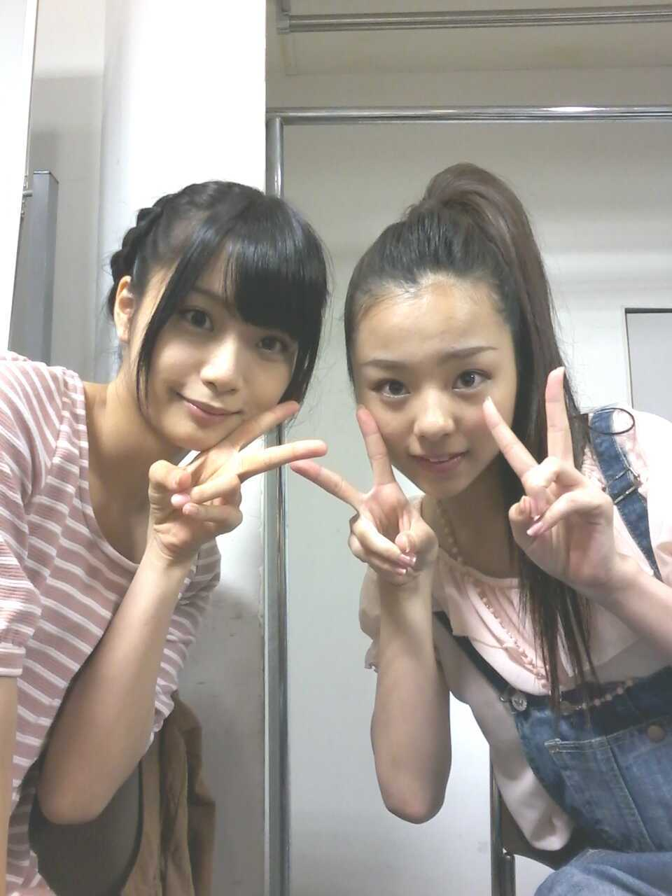
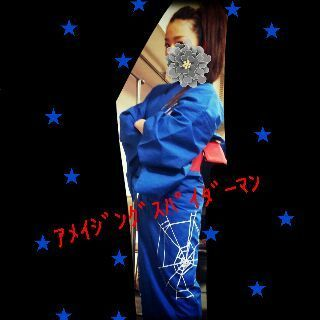

ほい〜*・ω・*
ろってぃーです。にっ
昨日の 乃木坂浪漫 は
まひろでした..ω
どうでしたかぁ？*´・ω
最後のオフshotは
自分でもちょっと
変子だなっ・ω・笑
って思っちゃった )))にっ♪
カメラ向けられたら
変顔しちゃう癖
なおさなければww*ε*ねっ
それとっ、 一昨日と昨日,
アメイジングスパイダーマン★の
応援をやらせて頂きました。
24時間の生放送のお仕事は
初めてで
学ぶことがいっぱいあって
たくさん勉強になりました。
本当に楽しかったです。
アメスパ本当に最高でしたよっ
〃ω〃
皆さんも是非 映画館に
足を運んでください。♪
まひろももう一度
プライベートで
見に行こうかなっ))♪
それに、
スパイダーマンの浴衣も
着せて頂けて、
本当にテンション上がりました^^
ヘアスタイルは、
乃木坂として活動し始めてから
初の アップです(^-^)☆

まいまい♪とっ,
まいまい かわいいっ^^
アメスパに出ている
男優さん,女優さんが
かっこよすぎたので
その方々が今までに
出演した映画を,
今からどっさりと
レンタルしてきますっ=・ω・=
ぢゃあ またですっ のし。
